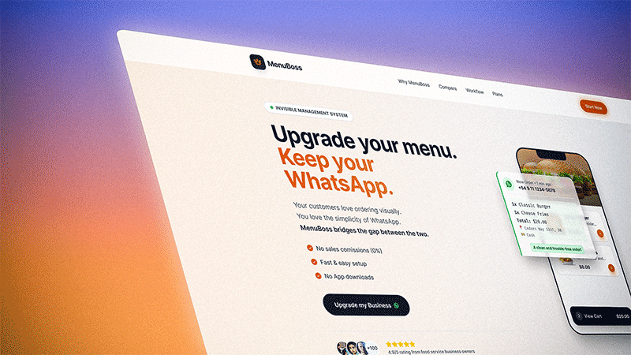
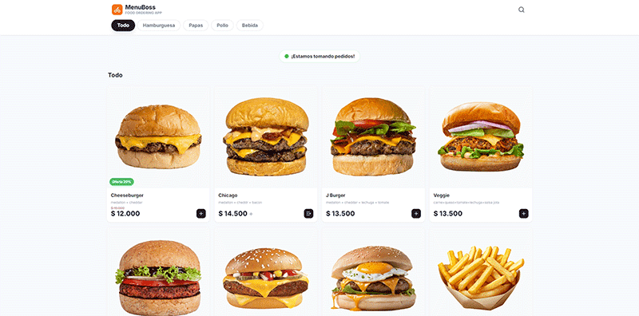
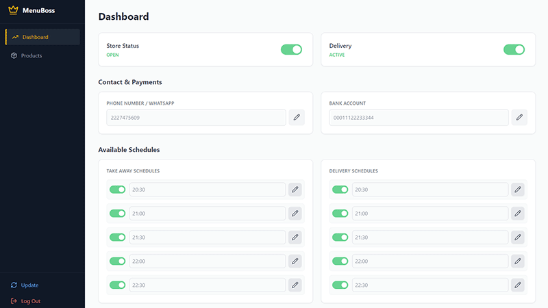
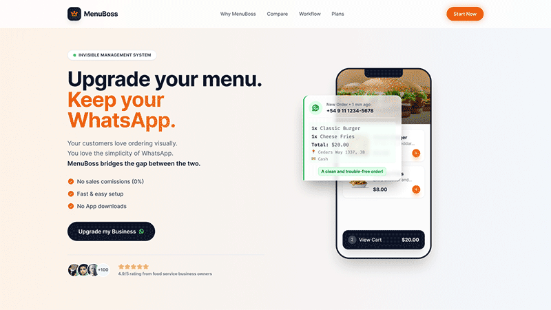

Leaving “Are You Open?” Behind: Designing MenuBoss to Automate Sales

The Challenge: Friday Night Chaos
Any food business owner in a mid-sized city knows the terror of 8:30 PM on a Friday. The kitchen is at full capacity, orders are piling up, and the phone won’t stop ringing. But they’re not closed sales; they’re dozens of WhatsApp messages repeating the same four questions:
• 'Are you open?'
• 'Are you taking orders?'
• 'Can you send me the updated menu?'
• 'Are you doing delivery today?'
The design challenge for MenuBoss was clear: we needed to create a Micro-SaaS that eliminated this friction at its root. The goal was to offer the end customer a 100% visual and self-serve purchasing experience, while delivering the business owner a clean, clear order sent directly to their WhatsApp. All of it designed for users without advanced technical knowledge.
The Solution: A Visual Bridge Between Hunger and the Kitchen
To achieve this, we divided the product into three fundamental pillars, each with a very specific UX and Conversion Optimization objective.
The Customer Frontend: Zero Friction, 100% Conversion
In the food industry, people buy with their eyes. We knew customers didn’t want to download heavy apps or navigate unreadable PDFs with zoom on their phones.
We designed a digital menu focused on visual clarity and immediacy.

Key Design Decisions
• Status badge: At the very top, a green indicator that clearly states “We’re taking orders!”. This instantly eliminates the most common question restaurants receive.
• Category navigation: Quick “pill-style” filters (All, Burgers, Fries, etc.) so users can find what they’re looking for in fewer than three clicks.
• Photography as the hero: Large product cards with high-contrast buttons, designed for “fat finger” usability.
The Admin Dashboard: Designed for the Non-Techie
This is where we faced our biggest UX challenge. The ideal MenuBoss user is an excellent cook or entrepreneur; not an IT manager.
The control panel needed to require the lowest possible cognitive load. The abstract thinking required to create categories, upload products, organize variables, and configure schedule logic is often overwhelming on other platforms.

Key Design Decisions:
• The “switch” rule: Instead of complex dropdown menus to open or close the store, we used large, friendly toggles. Turning off the “Store Status” or “Delivery” is as easy as flipping a light switch.
• Simplified schedule management: We display Takeout and Delivery hours visually and side by side. This allows the owner to set up their week once and forget about it.
• The product organization challenge: To solve the abstraction of menu ordering, we built an interface that mirrors the final result, allowing owners to organize their offerings intuitively and without technical terminology.
The Landing Page: Selling Empowerment
MenuBoss marketing couldn’t focus solely on an app. We had to sell the recovery of control. The landing page was designed around the core concept of “zero learning curve.”

The value proposition is immediate: Your menu, your rules, zero commissions.
Key Design Decisions:
• Direct copywriting: “Your digital menu. Your rules. Your WhatsApp.” Three short sentences that summarize the main benefit.
• Objection handling in the hero section: With three simple bullet points we neutralize the main fears: 0% commissions, instant payments, and no app downloads.
• Visual social proof: The floating “New Order” widget over the phone shows exactly how the owner receives the information (clean and structured), contrasting with the chaotic, unorganized messages they used to get.
The Result: From Managers Back to Cooks
Although MenuBoss is still in its early stages, design validation shows that it solves the core problem of our user persona. By delegating operational questions to an intelligent and visual interface, food business owners regain what they value most: time.
MenuBoss is not just a digital menu; it’s a filter that turns repetitive questions into ready-to-charge sales tickets.